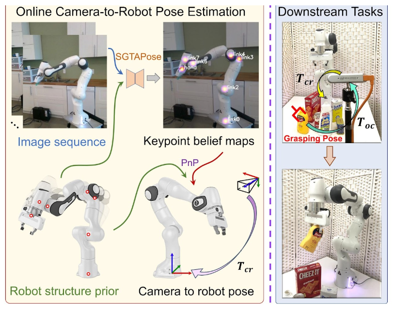

|
Zekai Yin I'm a research assistant at H2X lab in Boston University led by Professor Eshed Ohn-Bar. I just obtained my Master of Science Degree in Artifical Intelligence from Boston University, advised by Professor Eshed Ohn-Bar. Prior to that, I graduated from Peking University with a Bachelor's Degree in Data Science and Big Data Technology, advised by Professor Hao Dong. Email / CV / Scholar / Github |

|
ResearchI'm interested in computer vision, deep learning, Human-Robot-Interaction, and robotics. Some papers are highlighted. |
|

|
SGTAPose: Robot Structure Prior Guided Temporal Attention for Camera-to-Robot Pose Estimation from Image Sequence
Yang Tian*, Jiyao Zhang*, Zekai Yin*, Hao Dong, CVPR, 2023 project page / arXiv Online camera-to-robot pose estimation from single-view successive frames of an image sequence. |
|
This website was forked from source code. |